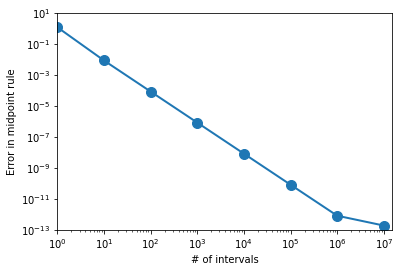
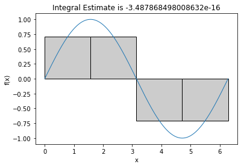
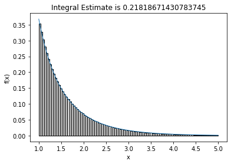
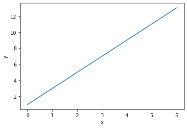
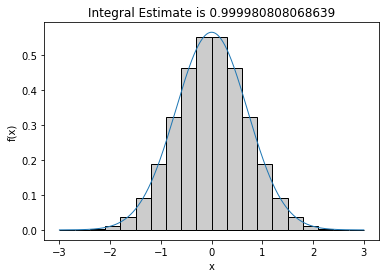

Functions as Arguments
Contents
Functions as Arguments¶
Reference: Chapter 5 of Computational Nuclear Engineering and Radiological Science Using Python, R. McClarren (2018)
Learning Objectives¶
After studying this notebook, completing the activities, and asking questions in class, you should be able to:
Pass a function as an argument to a function
Define and use lambda functions
Functions passed to Functions¶
Functions can also use other functions. In the example below, the function my_g takes my_f as an input. Try and predict its output before you run the cell.
def my_f(x):
return (x/3)*5
def my_g(f,x):
return f(x)**2+1
print (my_g(my_f,6))
101.0
Motivating Example: Midpoint Integration¶
Recall the Midpoint formula for approximating an integral.
With only one element:
With \(N\) elements:
where $\(\Delta x = \frac{b - a}{N} ~~,\)\( and \)\(m_i = i \cdot \Delta x +\frac{\Delta x}{2} + a ~~.\)$
We want to integrate an arbitrary function using the midpoint rule. To do this, we need to evaluate the function at several values to calculate the midpoint sum.
In the following Python code, argument f is a function with a scalar input and scalar output.
def midpoint_rule(f,a,b,num_intervals):
"""integrate function f using the midpoint rule
Args:
f: function to be integrated, it must take one argument
a: lower bound of integral range
b: upper bound of integral range
num_intervals: the number of intervals to break [a,b] into
Returns:
estimate of the integral
"""
L = (b-a) #how big is the range
dx = L/num_intervals #how big is each interval
#midpoints are a+dx/2, a+3dx/2, ..., b-dx/2
midpoints = np.arange(num_intervals)*dx+0.5*dx+a
integral = 0
for point in midpoints:
integral += f(point)
return integral*dx
help(midpoint_rule)
Help on function midpoint_rule in module __main__:
midpoint_rule(f, a, b, num_intervals)
integrate function f using the midpoint rule
Args:
f: function to be integrated, it must take one argument
a: lower bound of integral range
b: upper bound of integral range
num_intervals: the number of intervals to break [a,b] into
Returns:
estimate of the integral
import numpy as np
a = 1.0
dx = 1.0
midpoints = np.arange(10)*dx+0.5*dx+a
print(midpoints)
[ 1.5 2.5 3.5 4.5 5.5 6.5 7.5 8.5 9.5 10.5]
Thus midpoint_rule is a function that takes another function, f, as an argument (input).
Now we will approximate:
using \(N=10\) and the midpoint rule. The analytic solution (correct answer) is 2.
print(midpoint_rule(np.sin,0,np.pi,10))
2.0082484079079745
### BEGIN SOLUTION
def my_f(x):
return np.cos(x) * x
approx_integral = midpoint_rule(my_f,np.pi,2*np.pi,5)
print(approx_integral)
### END SOLUTION
1.9659448856595125
### BEGIN HIDDEN TESTS
import math
assert math.fabs(approx_integral - 1.97) < 0.03, "Answer not correct. Make sure you are using the correct number of elements."
### END HIDDEN TESTS
Convergence Analysis¶
At what rate does an approximation converge to the true solution? is a central question in numerical analysis.
Let’s characterize the convergence of the midpoint approximation for this particular integral.
import math
import numpy as np
import matplotlib.pyplot as plt
%matplotlib inline
# Define values of N to consider
num_intervals = 8 #number of interval sizes
intervals = 10**np.arange(num_intervals) #run several different intervals
print("We will consider the following values of N:")
print(intervals)
print(" ")
# Allocate an array to store result
integral_error = np.zeros(num_intervals)
# Define integration limits
a = 0
b = np.pi
# Loop over different values of N
count = 0
for interval in intervals:
print("Considering N =",interval)
integral_error[count] = np.fabs(2 - midpoint_rule(np.sin,a,b,interval))
count += 1
# Create figure
fig = plt.figure()
ax = fig.add_subplot(111)
import matplotlib.ticker as mtick
plt.loglog(intervals,integral_error,marker="o",markersize = 10,linewidth=2);
plt.xlabel("# of intervals")
plt.ylabel("Error in midpoint rule")
plt.axis([1,1.5e7,1.0e-13,10])
plt.show()
We will consider the following values of N:
[ 1 10 100 1000 10000 100000 1000000 10000000]
Considering N = 1
Considering N = 10
Considering N = 100
Considering N = 1000
Considering N = 10000
Considering N = 100000
Considering N = 1000000
Considering N = 10000000

Approximate the exponential integral function: $\(E_n(x) = \int\limits_1^\infty \frac{e^{-xt}}{t^n} ~ \!dt ~.\)$
Use \(N = 10^6\) element, \(x=1\), \(n=1\), and an upper bound of 10,000 (instead of infinity).
def exp_int_argument(t,n=1,x=1):
''' Exponential function integrand
Arguments:
t: scalar
n: scalar, default is n=1
x: scalar, default is x=1
Returns:
f: value of integrand at t,n,x
'''
###BEGIN SOLUTION
f = np.exp(-x*t)/t**n
return f
approx_exp_integral = midpoint_rule(exp_int_argument, 1, 10000, 10**6)
print(approx_exp_integral)
###END SOLUTION
0.21938086941811155
The exact answer is 0.2193839343.
A Fancier Integration Function¶
Using matplotlib we can make an even fancier integration function
import numpy as np
import matplotlib.pyplot as plt
%matplotlib inline
def midpoint_rule_graphical(f,a,b,num_intervals,filename):
"""integrate function f using the midpoint rule
Args:
f: function to be integrated, it must take one argument
a: lower bound of integral range
b: upper bound of integral range
num_intervals: the number of intervals to break [a,b] into
Returns:
estimate of the integral
Side Effect:
Plots intervals and areas of midpoint rule
"""
# Create plot
ax = plt.subplot(111)
# Setup, similar to previous midpoint_rule function
L = (b-a) #how big is the range
dx = L/num_intervals #how big is each interval
midpoints = np.arange(num_intervals)*dx+0.5*dx+a
x = midpoints
#y = np.zeros(num_intervals)
integral = 0
count = 0
# Loop over points
for point in midpoints:
# Evaluate function f
#y[count] = f(point)
# Calculate integral
integral = integral + f(point)
# Calculate verticies for plots
verts = [(point-dx/2,0)] + [(point-dx/2,f(point))]
verts += [(point+dx/2,f(point))] + [(point+dx/2,0)]
# Draw rectangles
poly = plt.Polygon(verts, facecolor='0.8', edgecolor='k')
ax.add_patch(poly)
# Incrememnt counter
count += 1
# y = f(x)
# Draw smooth line for f
smooth_x = np.linspace(a,b,10000)
smooth_y = f(smooth_x)
plt.plot(smooth_x, smooth_y, linewidth=1)
# Add labels and title
plt.xlabel("x")
plt.ylabel("f(x)")
plt.title("Integral Estimate is " + str(integral*dx))
# Save figure
plt.savefig(filename)
# Return approximation for integral
return integral*dx
# Call function
midpoint_rule_graphical(np.sin,0,2*np.pi,4,'C4_fig7.pdf')
-3.487868498008632e-16

num_points = 100
upper_bound = 5
print("Answer is 0.2193839343")
print("Our appoximation with upper bound",upper_bound,"and",num_points,"points is"
,midpoint_rule_graphical(exp_int_argument,1,upper_bound,num_points,'C4_fig8.pdf'))
Answer is 0.2193839343
Our appoximation with upper bound 5 and 100 points is 0.21818671430783745

Lambda Functions¶
Python also allows you to define a lambda function, which is basically a one line function without the whole def business. Here’s an example where the lambda function is a line.
# `Normal` function definition
def simple_line(x):
'''Fill me in!!!
'''
return 2.0*x + 1.0
# define the function `simple_line` with a single line of code
simple_line = lambda x: 2.0*x + 1.0
# Evaluate function at three values of x
print("The line at x = 0 is", simple_line(0))
print("The line at x = 1 is", simple_line(1))
print("The line at x = 2 is", simple_line(2))
# Evaluate function at many values of f
x = np.linspace(0,6,50)
y = simple_line(x)
# Make plot
plt.plot(x,y)
plt.ylabel("y")
plt.xlabel("x")
plt.show()
The line at x = 0 is 1.0
The line at x = 1 is 3.0
The line at x = 2 is 5.0

Lambda functions in Python are analogous to anonymous functions in MATLAB.
func_1 = (lambda x: x + x)(2)
func_2 = lambda x, y:x+y
print (func_1)
print (func_2(1,5))
4
6
Example: Lambda Functions and Midpoint Integration¶
We can use lambda functions in our midpoint integration routine as well. Here we define a Gaussian as the integrand:
The analytic answer to the integral is 1.
# Define lambda function
gaussian = lambda x: np.exp(-x**2)/np.sqrt(np.pi) #function to compute gaussian
# Approximate integral using lambda function
midpoint_rule_graphical(gaussian,-3,3,20,'C4-with-lambda-func.pdf')
0.999980808068639

# Approximate integral with more manual approach
midpoint_rule_graphical(lambda x: np.exp(-x**2)/np.sqrt(np.pi),-3,3,20,'C4-without-lambda-func.pdf')
0.999980808068639

4c-ii. Extension to Two Dimensional Functions¶
We will revisit numeric integration at the end of the semester. We can use two lambda functions to extend the midpoint rule to integrate two dimensional functions, such as
def midpoint_2D(f,ax,bx,ay,by,num_intervals_x,num_intervals_y):
"""Midpoint rule extended to 2D functions
Arguments:
f: function to be integrated. Takes two scalar inputs (x,y) and returns a scalar.
ax: lower bound for dimension 1
bx: upper bound for dimension 1
ay: lower bound for dimension 2
by: upper bound for dimension 2
num_intervals_x: number of intervals for dimension 1
num_intervals_y: number of intervals for dimension 2
Returns:
approximation to integral (scalar)
"""
# For a given y, calculate the integral in dimension 1 (from ax to bx) using midpoint rule
integral_over_x = lambda y: midpoint_rule(lambda x: f(x,y),ax,bx,num_intervals_x)
# Apply midpoint rule to dimension 2
return midpoint_rule(integral_over_x,ay,by,num_intervals_y)
#
sin2 = lambda x,y:np.sin(x)*np.sin(y)
print("Estimate of the integral of sin(x)sin(y), over [0,pi] x [0,pi] is",
midpoint_2D(sin2,0,np.pi,0,np.pi,1000,1000))
Estimate of the integral of sin(x)sin(y), over [0,pi] x [0,pi] is 4.000003289869756
This code snippet defines one lambda function that takes care of the x argument to f, and another that defines the integral over x for a given y, this second function is passed to the midpoint rule.
The way that this works is that when the second midpoint rule evaluates integral_over_x at a certain point in y, it evaluates the integral over all x at that point.